⚡ Lesson 18: Eevee Real-Time Rendering
Welcome to the world of real-time rendering! Eevee is Blender's lightning-fast render engine that delivers beautiful results in seconds instead of minutes or hours. Think of it as the difference between taking a Polaroid photo (instant!) versus developing film in a darkroom (slow but potentially higher quality). Eevee uses your graphics card (GPU) to render scenes almost instantly, making it perfect for animations, quick previews, and projects where speed matters. While it takes some shortcuts compared to Cycles' physically-accurate rendering, Eevee is incredibly powerful and used in professional productions worldwide. In this lesson, you'll master Eevee's settings, understand its strengths and limitations, and learn when to use it versus Cycles for maximum efficiency.
🎯 What You'll Learn
- What real-time rendering is and how Eevee works
- Key differences between Eevee and Cycles
- Eevee render settings and optimization
- Screen Space effects (Reflections, Refraction, Ambient Occlusion)
- Bloom, Motion Blur, and Depth of Field in Eevee
- Shadows and shadow settings for quality
- Indirect lighting with Light Probes (Volume, Sphere, Plane)
- Material setup differences for Eevee
- When to use Eevee vs Cycles (decision framework)
- Troubleshooting common Eevee issues
- Complete Eevee rendering workflow project
⏱️ Estimated Time: 60-75 minutes
🎯 Project: Render a complete scene optimized for Eevee
In This Lesson
⚡ What is Real-Time Rendering?
Before diving into Eevee specifically, let's understand what "real-time rendering" means and why it's revolutionary for 3D artists.
Understanding Real-Time Rendering
💡 Real-Time Explained
Real-time rendering means:
- Rendering happens fast enough to be interactive
- Changes appear instantly (or near-instantly) in viewport
- Final renders complete in seconds, not minutes/hours
- Similar technology to video games (real-time graphics)
How it achieves speed:
- Rasterization: Projects 3D geometry to 2D screen quickly
- Screen space calculations: Effects calculated based on what's visible on screen
- Approximations: Uses clever tricks instead of physically accurate calculations
- GPU optimization: Leverages graphics card parallel processing
- Pre-baked data: Some lighting calculated ahead of time
Real-world analogy:
- Traditional rendering (Cycles): Like a painter carefully mixing every color, calculating exact light bounce
- Real-time rendering (Eevee): Like a skilled sketch artist—quick, looks great, uses smart shortcuts
- Both can create beautiful results, just different approaches
What is Eevee?
🎨 Blender's Real-Time Engine
Eevee defined:
- Blender's real-time render engine (added in Blender 2.8)
- Named after the Pokémon character (Blender tradition)
- Uses OpenGL-based rendering (graphics card technology)
- Produces high-quality results extremely fast
What makes Eevee special:
- Speed: Renders 10-100x faster than Cycles
- Interactivity: See changes instantly in viewport
- Animation-friendly: Can render 300+ frame animations in minutes
- Professional quality: Used in TV, commercials, motion graphics
- PBR materials: Supports same Principled BSDF as Cycles
Where Eevee is used:
- Animation and motion graphics
- Previz (pre-visualization) for film
- Real-time art installations
- Quick product shots and presentations
- Stylized rendering (non-photorealistic)
- Any project where speed is priority
How Eevee Works
🔧 The Technical Side (Simplified)
Eevee's rendering approach:
- Step 1: Rasterization
- Converts 3D meshes to 2D screen pixels
- Very fast GPU operation
- Similar to video game rendering
- Step 2: Shading
- Calculates colors based on materials and lights
- Uses shader programs (code running on GPU)
- Principled BSDF supported
- Step 3: Screen Space Effects
- Reflections, refraction, ambient occlusion
- Calculated using screen-visible information
- Fast but has limitations (more later)
- Step 4: Post-Processing
- Bloom, depth of field, motion blur
- Applied after main rendering
- Enhances final image
Key concept - Screen space:
- Many Eevee effects only "see" what's on screen
- Can't calculate reflections of objects behind camera
- This limitation is why it's so fast
- Understanding this explains Eevee's strengths and weaknesses
💡 The Speed Revolution: Before Eevee, Blender artists had only Cycles for final rendering, which meant waiting minutes or hours for each frame. Eevee changed everything—suddenly you could render entire animations in the time it took Cycles to render a single frame. This wasn't just faster; it fundamentally changed workflows. Artists could iterate rapidly, experiment freely, and create animations that would have been impractical with Cycles alone. Eevee democratized animation by making it time-feasible for solo artists and small teams.
When Real-Time Rendering Excels
✅ Perfect Use Cases for Eevee
Eevee is ideal for:
- Animation:
- Need to render hundreds or thousands of frames
- Time constraints make Cycles impractical
- Motion graphics, explainer videos, short films
- Quick iterations:
- Testing lighting setups rapidly
- Showing clients multiple options
- Exploring creative directions
- Stylized looks:
- Cartoon or cel-shaded styles
- Non-photorealistic rendering
- Artistic projects where "perfect" realism not required
- Real-time presentations:
- Interactive viewport rendering
- Live client presentations
- Art installations with real-time updates
- Viewport previz:
- Planning camera angles
- Blocking animation
- Testing scene composition
Limitations of Real-Time Rendering
⚠️ Where Eevee Struggles
Eevee is less ideal for:
- Photorealistic still images:
- Cycles produces more physically accurate results
- Better caustics (light through glass)
- More realistic indirect lighting
- Complex glass/refraction:
- Screen-space refraction has limitations
- Can't refract objects not on screen
- Cycles handles this better
- Highly accurate reflections:
- Screen-space reflections limited
- Objects behind camera won't reflect
- Reflection probes help but aren't perfect
- Volumetrics (smoke, fog):
- Eevee volumetrics work but slower and lower quality
- Cycles handles complex volumes better
- Extreme lighting scenarios:
- Very dark scenes with subtle lighting
- Complex caustics and light transmission
- Subsurface scattering depth
🔄 Eevee vs Cycles Comparison
Understanding the differences between Eevee and Cycles helps you choose the right tool for each project. Let's compare them directly.
Side-by-Side Comparison
📊 Eevee vs Cycles Overview
| Feature | Eevee | Cycles |
|---|---|---|
| Speed | ⚡ Very fast (seconds) | 🐌 Slower (minutes-hours) |
| Accuracy | Good approximation | ✅ Physically accurate |
| Rendering method | Rasterization | Path tracing |
| Best for | Animation, speed | Photorealism, stills |
| Reflections | Screen space (limited) | ✅ Full ray traced |
| Transparency | Screen space refraction | ✅ Accurate refraction |
| Caustics | ❌ Not supported | ✅ Full caustics |
| Indirect lighting | Requires light probes | ✅ Automatic |
| Viewport preview | ✅ Real-time accurate | Preview (not final) |
| Memory usage | Lower | Higher |
| GPU requirement | Any modern GPU | Better GPU = faster |
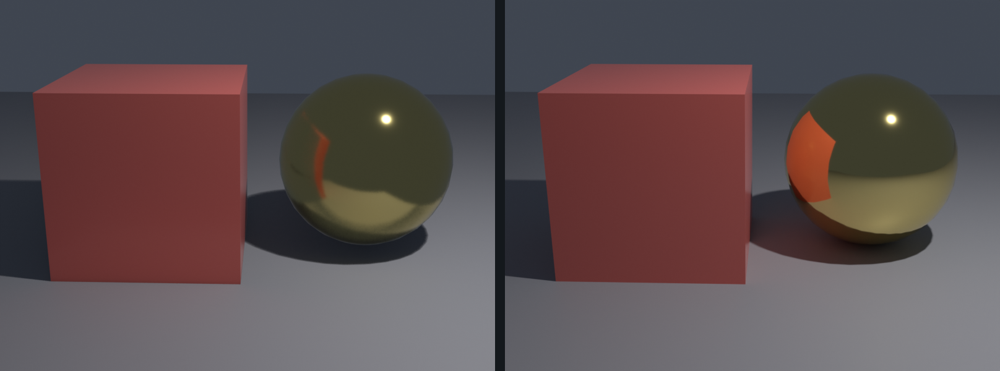
Visual Quality Differences
🎨 What You'll Notice
Eevee characteristics:
- Crisp, clean look: Often sharper than Cycles
- Slightly "gamey" feel: Can look like high-end video game graphics
- Strong direct lighting: Lights create clear, defined illumination
- Softer indirect lighting: Ambient and bounce light less pronounced
- Screen-space artifacts: Reflections may cut off at screen edges
Cycles characteristics:
- Softer, more natural: Light behaves more like real world
- "Photographic" quality: Looks like camera photograph
- Subtle indirect lighting: Natural bounce light and color bleed
- More noise (without denoising): Grain from path tracing
- Accurate glass/water: Realistic refraction and caustics
Decision Framework
🤔 Choosing Between Eevee and Cycles
Use Eevee when:
- ✅ Rendering animation (multiple frames)
- ✅ Time is limited (need quick results)
- ✅ Stylized or non-photorealistic look
- ✅ Real-time interactivity needed
- ✅ Scene has straightforward materials
- ✅ Client preview/iteration phase
- ✅ Hardware limitations (older GPU)
Use Cycles when:
- ✅ Photorealism is critical
- ✅ Single hero image (still render)
- ✅ Complex glass, water, or refraction
- ✅ Need caustics (light through glass patterns)
- ✅ Extreme lighting scenarios
- ✅ Architectural visualization (accuracy matters)
- ✅ Time is available for quality
Hybrid approach (use both!):
- Previz in Eevee → Final render in Cycles
- Animation in Eevee → Hero shots in Cycles
- Test lighting in Eevee → Refine in Cycles
- Get best of both workflows!
or simplify] G -->|No| I[Eevee Perfect Choice] E --> J{Time Available?} J -->|Limited| K[Start with Eevee
Final in Cycles] J -->|Plenty| L[Use Cycles] style C fill:#4CAF50,stroke:#333,stroke-width:2px,color:#fff style I fill:#4CAF50,stroke:#333,stroke-width:2px,color:#fff style F fill:#4CAF50,stroke:#333,stroke-width:2px,color:#fff style E fill:#667eea,stroke:#333,stroke-width:2px,color:#fff style L fill:#667eea,stroke:#333,stroke-width:2px,color:#fff
⚙️ Eevee Basic Settings
Let's dive into Eevee's render settings. Understanding these controls will help you balance quality and speed for your projects.
Accessing Eevee Settings
🎛️ Where to Find Eevee Controls
Location:
- Properties panel (right side) → Render Properties (camera icon)
- Top dropdown: Ensure "Eevee" is selected (not Cycles)
- Settings organized in collapsible sections
Key sections you'll use:
- Sampling: Quality and viewport settings
- Raytracing: Reflections, refraction, and Fast GI (the Ambient Occlusion replacement)
- Shadows: Shadow quality controls, under Sampling
- Film: Transparency and color management
- Compositor Glare node: Bloom and glow, added in the Compositing workspace
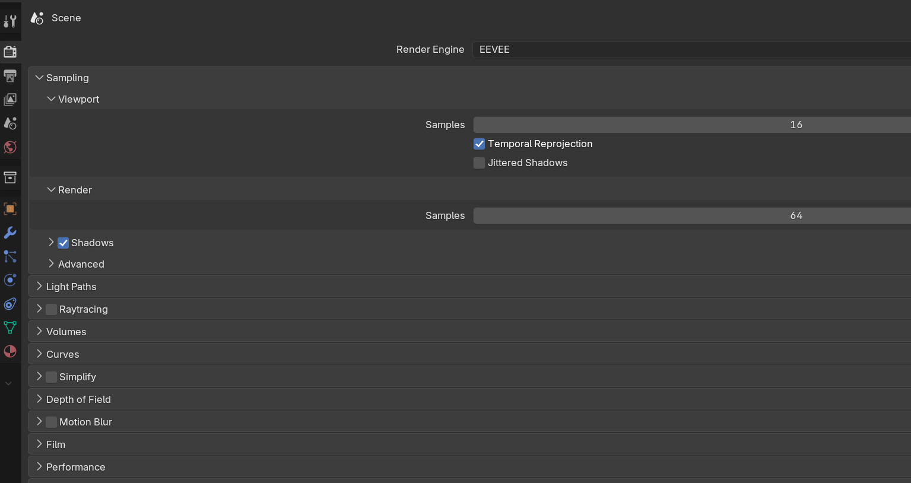
Switching to Eevee
🔄 Activating Eevee Render Engine
Step-by-step:
- Properties panel → Render Properties (camera icon)
- Top dropdown shows current engine
- Click dropdown → Select "Eevee"
- Settings immediately change to Eevee options
Quick viewport test:
- Press
Zkey → Select "Rendered" - Or click sphere icon (top-right of 3D viewport)
- Viewport shows Eevee rendering in real-time
- Should be very responsive and smooth
Note on viewport modes:
- Material Preview: Fast preview (not full Eevee)
- Rendered: Full Eevee with all effects
- For accurate Eevee preview, use Rendered mode
Sampling Settings
🎯 Quality Control
Render samples:
- Controls final render quality
- Higher samples = cleaner result
- Default: 64 (good balance)
- Recommended:
- Draft: 32
- Good: 64-128
- High quality: 256-512
- Rarely need above 512 for Eevee
Viewport samples:
- Controls viewport rendering quality
- Lower = faster viewport interaction
- Default: 16 (very responsive)
- Recommended:
- Fast preview: 8-16
- Working: 32
- High quality preview: 64
- Doesn't affect final render (only viewport)
What samples affect:
- Fast GI smoothness
- Raytraced reflection clarity
- Depth of Field quality
- Motion Blur smoothness
- Overall anti-aliasing
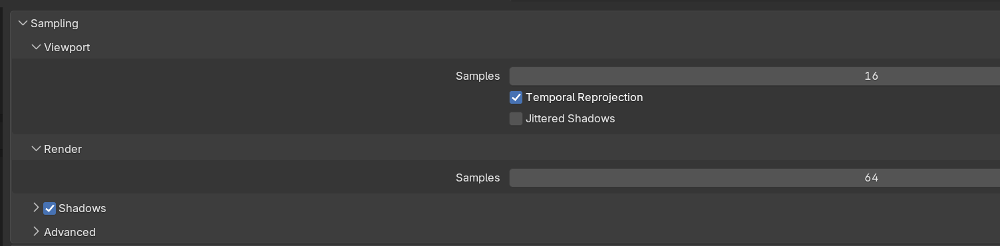
Film Settings
🎬 Background and Transparency
Transparent background:
- Checkbox: "Transparent"
- When enabled: Background renders transparent
- Useful for compositing over other footage/images
- Save as PNG to preserve transparency
Filter size:
- Controls anti-aliasing (edge smoothness)
- Default: 1.5 pixels
- Higher = softer edges (more blur)
- Lower = sharper edges (may look jagged)
- Usually leave at default
Overscan:
- Renders slightly beyond frame edges
- Useful for camera shake/motion blur
- Prevents black edges when camera moves
- Usually not needed for static camera
Performance Settings
⚡ Speed Optimization
High Quality Normals:
- Checkbox in Sampling section
- Enables: More accurate normal map rendering
- Slight performance cost
- Enable when: Using detailed normal maps
- Disable when: Speed is critical, simple materials
Softer shadow edges:
- EEVEE Next has no Soft Shadows checkbox
- Soften edges with higher Shadow Rays or larger lights
- Performance impact
- Almost always worth it for quality
Memory management:
- Eevee uses GPU memory (VRAM)
- Large textures consume more VRAM
- If running out: Reduce texture sizes
- Lower samples help slightly
✅ Recommended Starting Settings
For most projects, start with these Eevee settings:
- Render Samples: 64-128
- Viewport Samples: 16
- Fast GI: Enabled (requires Raytracing on)
- Compositor Glare (Bloom): Added if scene has bright lights
- Raytracing: Enabled (reflections and refraction)
- Shadow Rays: 2 or higher for softer shadows
- Transparent: Disabled (unless compositing)
Adjust from here based on your specific needs!
✨ Screen Space Effects
Screen space techniques are EEVEE Next's secret weapon for adding realism. Raytracing with Screen Tracing and Fast GI are fast but have important limitations you need to understand.
What is "Screen Space"?
🖥️ Understanding the Concept
Screen space explained:
- Effects calculated using only what's visible on screen
- Can't "see" objects behind camera or off-screen
- This limitation makes them extremely fast
- Trade-off: Speed for some accuracy
Real-world analogy:
- Imagine painting a reflection on a mirror
- You can only paint what you can see in front of mirror
- Can't paint objects behind you (not visible to paint from)
- That's screen space - limited to visible information
Main screen space effects in EEVEE Next:
- Raytracing with Screen Tracing (reflections)
- Raytraced Transmission (refraction)
- Fast GI in Ambient Occlusion mode (contact darkening)
Raytraced Reflections
🪞 Reflective Surfaces
What raytraced reflections do:
- Create reflections on shiny surfaces
- Metals, glossy materials, water, mirrors
- Screen Tracing reflects what is on screen, fast
- Work with Principled BSDF roughness
Enabling reflections:
- Render Properties → Raytracing
- Turn on Raytracing, then open the Screen Tracing subpanel
- Immediately see reflections in viewport (Rendered mode)
Raytracing settings (Screen Tracing subpanel):
- Resolution:
- Trace resolution scale: 1 is full resolution
- 2 traces at half resolution: faster, softer
- Lower the scale for speed, 1 for quality
- Max Roughness:
- How rough materials can be and still trace
- Default: 0.5
- Higher = more materials show reflections
- Lower = only very smooth materials reflect
- Screen Trace Thickness:
- How thick on-screen surfaces are assumed to be
- Affects reflection accuracy
- Usually leave at the default (0.2)
- Precision:
- Screen Trace Quality: higher is more accurate, slower
- Raise it if traced reflections look broken
Screen tracing limits to know:
- Can't reflect objects behind camera (not on screen)
- Reflections fade at screen edges
- Rough surfaces don't reflect as accurately as Cycles
- Off screen = falls back to a Sphere light probe or world
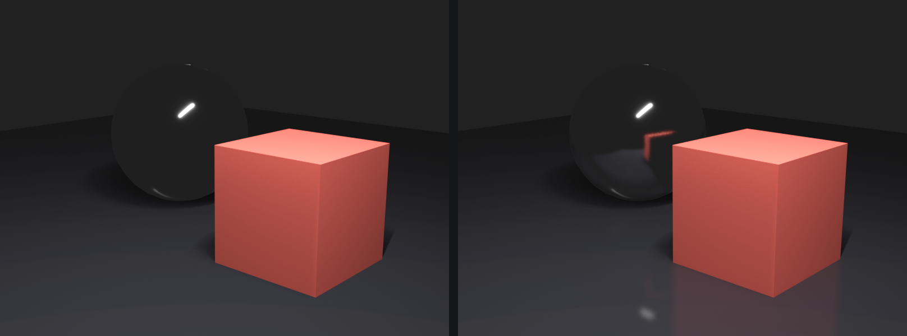
Raytraced Refraction
💎 Transparent Materials
What refraction does:
- Bends light through transparent materials
- Glass, water, plastic distortion
- Creates realistic transparent objects
Enabling refraction:
- Render Properties → Raytracing turned on
- Per material, enable Raytrace Transmission
- Now transparent materials will refract
Material setup for refraction:
- Principled BSDF material
- Transmission: 1.0 (fully transparent)
- IOR (Index of Refraction):
- Glass: 1.45
- Water: 1.33
- Diamond: 2.42
- Roughness: 0.0-0.1 (clear glass)
Important EEVEE Next material settings:
- Select material → Material Properties
- Settings section (bottom of material)
- Render Method: set to Blended for clear glass
- Raytrace Transmission: enable the checkbox
- Thickness: set to Sphere so the backdrop bends
Refraction limitations:
- Screen tracing only refracts what's on screen (behind glass)
- Objects not visible to camera won't refract properly
- Less accurate than Cycles ray-traced refraction
- But much faster!
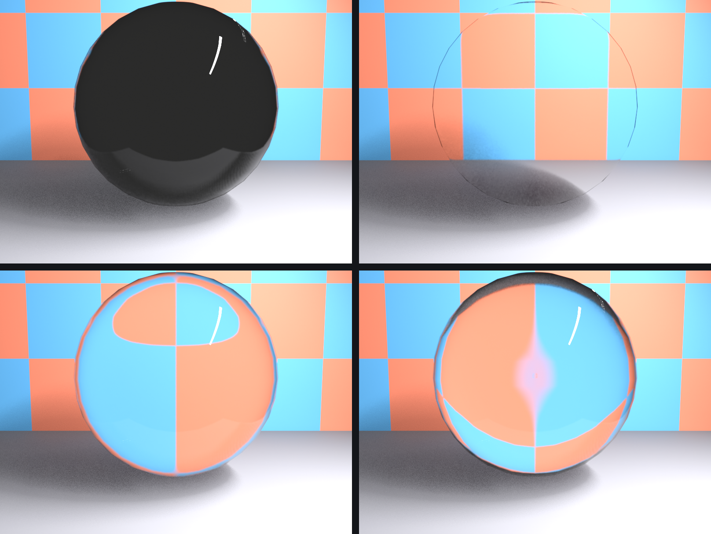
Ambient Occlusion (Fast GI)
🌑 Contact Shadows
What Ambient Occlusion is:
- Darkens areas where surfaces meet (corners, crevices)
- Simulates ambient light being blocked
- Adds depth and realism to scenes
- Subtle but important for quality
Enabling Ambient Occlusion:
- Render Properties → Raytracing → Fast GI
- Turn on Fast GI, set Method to Ambient Occlusion
- Immediately see contact darkening
Fast GI settings:
- Distance:
- How far the trace reaches from surfaces
- Default: 1.0 Blender units
- Larger objects: increase distance
- Small objects: decrease distance
- Rays:
- Ray Count per pixel: strength and smoothness
- Default: 4
- Lower: faster, noisier darkening
- Higher: cleaner, slower darkening
- Steps:
- Step Count along each ray: accuracy
- Higher = more accurate but slower
- Usually leave at default (12)
When to use Ambient Occlusion:
- ✅ Almost always enable it!
- Essential for realistic depth perception
- Minor performance cost for major quality gain
- Disable only if absolutely need maximum speed
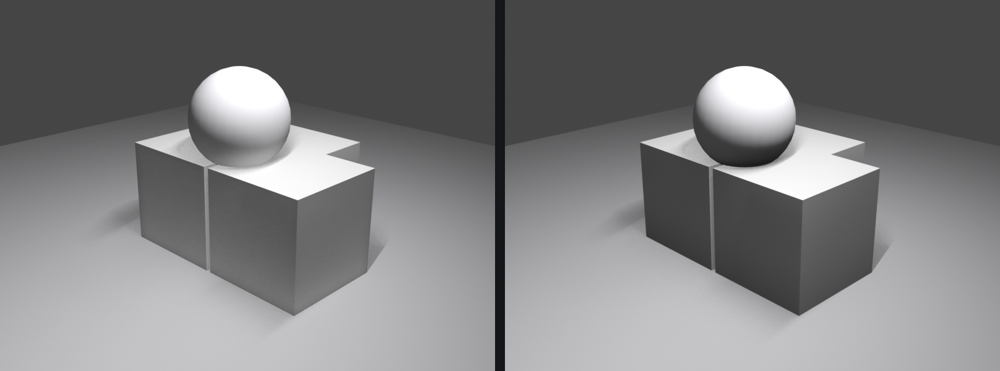
⚠️ Screen Space Effect Troubleshooting
Common issues and fixes:
- Reflections disappear at edges:
- This is a normal screen tracing limitation
- Add a Sphere light probe (covered later)
- Or avoid showing screen edges in render
- Glass looks black:
- Enable Raytracing in Render Properties
- Set the material Render Method to Blended
- Enable Raytrace Transmission in material settings
- AO too dark/strong:
- Lower the Fast GI Ray Count or shorten Distance
- Reduce Distance if affecting too large area
- No reflections on metal:
- Verify Raytracing and Screen Tracing are on
- Check material Roughness (lower = more reflective)
- Raise the Raytracing Max Roughness setting
💡 Screen Space Philosophy: Screen space effects are Eevee's brilliant compromise—they give you 80% of the visual quality with 5% of the computational cost. Yes, they have limitations, but understanding and working within those limitations is what makes Eevee so powerful. Professional Eevee artists don't fight these limitations; they embrace them and design shots that leverage Eevee's strengths while avoiding its weaknesses.
✨ Bloom and Visual Effects
Bloom is one of Eevee's most striking effects—it makes bright areas glow and creates that polished, professional look you see in games and motion graphics.
Understanding Bloom
💡 What is Bloom?
Bloom explained:
- Post-processing effect that makes bright areas glow
- Simulates how cameras and eyes respond to bright light
- Bright lights "bleed" into surrounding areas
- Creates cinematic, polished look
Real-world bloom examples:
- Streetlights in foggy night (glow around lights)
- Sun through trees (bright halo)
- Reflections on shiny surfaces (bright streaks)
- Any photo with bright lights (camera lens effect)
When to use bloom:
- Scenes with bright lights or emissive materials
- Night scenes with light sources
- Sci-fi or futuristic looks (glowing tech)
- Cinematic or stylized rendering
- Magic effects or energy (glowing elements)
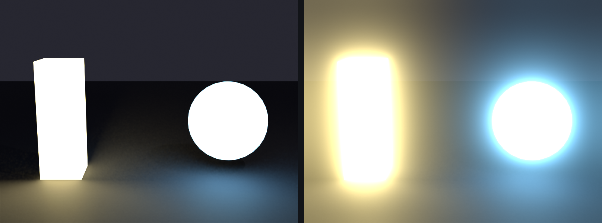
Adding and Configuring Bloom
⚙️ Glare Node Bloom Settings
Adding bloom:
- Open the Compositor and enable Use Nodes
- Add a Glare node between Render Layers and the output
- Set the Glare node Type to Bloom: bright areas start glowing
Glare node controls:
- Threshold:
- How bright something must be to glow
- Default: 1.0
- Lower (0.3-0.5): More areas glow (subtle effect)
- Higher (1.0-2.0): Only very bright areas glow
- Size:
- How far the glow spreads
- Larger Size: wider, more diffuse glow
- Smaller Size: tight glow
- Tint:
- Color applied to the bloom
- Default: White (no tint)
- Can create colored glow effects
- Usually leave at white for natural look
- Strength:
- Intensity of the bloom effect
- Subtle: low Strength
- Moderate: mid Strength
- Dramatic: high Strength
- Clamp / Maximum:
- Enable Clamp to cap the brightest highlights
- Prevents overly bright blooms
- Set Maximum to bound the glare brightness
- Use it for more controlled bloom
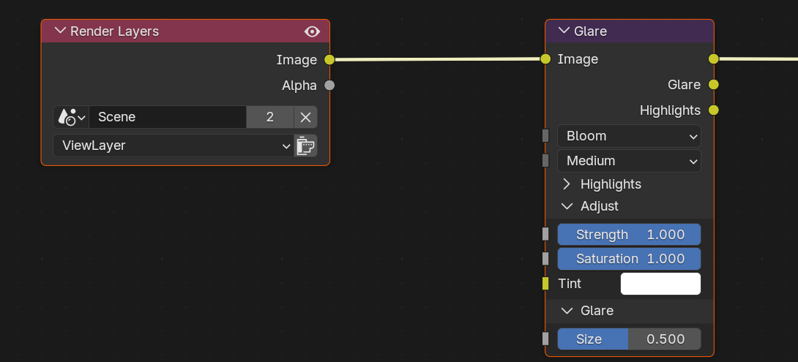
Bloom Best Practices
🎨 Using Bloom Effectively
Subtle bloom (realistic):
- Threshold: 0.8-1.0
- Size: small
- Strength: low
- Use for: Natural lighting, architectural viz, product shots
Moderate bloom (cinematic):
- Threshold: 0.5-0.8
- Size: medium
- Strength: medium
- Use for: Motion graphics, commercials, stylized work
Strong bloom (stylized):
- Threshold: 0.3-0.5
- Size: large
- Strength: high
- Use for: Sci-fi, fantasy, music videos, artistic work
Common mistakes to avoid:
- ❌ Too much Strength looks unrealistic
- ❌ Very low Threshold makes everything glow (muddy)
- ❌ Extreme Size creates a hazy, unclear image
- ✅ Start subtle, increase gradually
- ✅ Match the bloom Strength to scene style
Emissive Materials and Bloom
💡 Making Objects Glow
Creating emissive materials:
- Select object → Material Properties
- Principled BSDF → Emission section
- Emission Color: Choose glow color
- Emission Strength: Brightness (1.0-10.0+)
- Object now glows and triggers bloom
Emission strength guide:
- 1.0-3.0: Subtle glow (screen, indicator light)
- 5.0-10.0: Moderate glow (lamp, neon sign)
- 10.0-50.0: Strong glow (bright light bulb)
- 50.0+: Intense glow (sun, explosion, magic effect)
Glare bloom + Emission tips:
- Emission Strength controls how much object glows
- The Glare node Threshold controls when bloom kicks in
- Higher emission = more bloom effect
- Combine with lights for even brighter effect
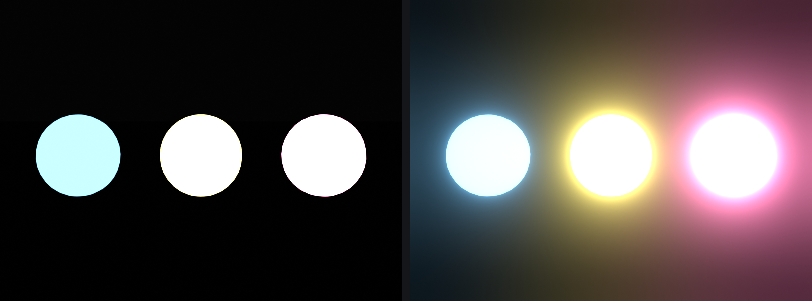
Other Visual Effects
🎬 Additional Eevee Effects
Depth of Field (DOF):
- Blurs objects not in focus (like camera lens)
- Set up in Camera properties
- Enable: Camera → Depth of Field
- Select focus object or set focus distance
- Adjust F-Stop for blur amount (lower = more blur)
- Eevee DOF is very fast and looks great
Motion Blur:
- Blurs moving objects (realistic camera effect)
- Enable: Render Properties → Motion Blur
- Check "Motion Blur" box
- Settings:
- Position: Start/End/Center of shutter
- Shutter: Amount of blur (0.5 = moderate)
- Steps: Quality (more = smoother)
- Performance cost: Significant
- Use for animation, not still images
Subsurface Scattering:
- Light penetrates and scatters inside material
- For skin, wax, marble, jade
- Enable in Principled BSDF → Subsurface
- Subsurface value: 0.0-1.0 (strength)
- Radius: How far light travels (RGB values)
- Eevee approximation is fast and convincing
✅ Bloom Quick Start Recipe
For most scenes, try these Glare node Bloom settings first:
- Type: Bloom (the Glare node mode)
- Threshold: 0.8 (only bright areas glow)
- Size: medium (balanced spread)
- Strength: low (subtle effect)
Then adjust to taste! Raise Strength for a more dramatic look, lower it for subtle realism.
🌓 Shadow Settings
Shadows are critical for realism and depth. Eevee's shadow system is fast but requires some configuration to look its best.
Understanding Eevee Shadows
💡 How Eevee Handles Shadows
Shadow technique:
- Eevee uses shadow maps (like games)
- Each light creates a shadow map (texture)
- Higher resolution = sharper shadows
- Trade-off: Quality vs performance
Key differences from Cycles:
- Cycles: Ray-traced shadows (perfect but slow)
- Eevee: Shadow mapped (fast but need tuning)
- Eevee shadows can have artifacts if not configured well
- But with proper settings, look excellent
Shadow Settings Overview
⚙️ Shadow Controls
Location: Render Properties · Sampling · Shadows
Main shadow settings:
- Shadow Rays:
- Ray-traced shadow samples per pixel
- Default: 1
- Higher = cleaner, less noisy shadows, more render time
- Range: 1 to 4
- Recommended: 2 to 4 for quality
- Shadow Steps:
- Ray-march steps along each shadow ray
- Default: 6
- Higher = smoother penumbra, more render time
- Recommended: 6 to 12 for quality
- Resolution scale:
- Shadow map detail (replaces the legacy Cube/Cascade Size)
- Default: 1.0 (full resolution)
- Lower it to trade sharpness for speed
- Recommendation: 1.0 for quality
- Softer shadow edges:
- EEVEE Next has no legacy Soft Shadows checkbox
- Soften edges with larger lights or higher Shadow Rays
- Recommendation: Raise Shadow Rays, then size the light
- Light Threshold:
- Minimum light intensity to cast shadows
- Dim lights below threshold won't cast shadows
- Default: 0.01 (very low)
- Performance optimization (fewer shadow maps)
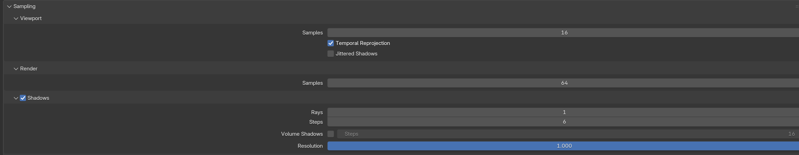
Per-Light Shadow Settings
💡 Individual Light Controls
Each light has its own shadow settings:
- Select light object
- Light Properties panel
- Shadow section
Per-light shadow options:
- Shadow (checkbox):
- Enable/disable shadows for this light
- Disable to save performance if shadows not needed
- Clip Start:
- How close to light shadows start
- Objects closer than this won't cast shadows
- Increase if seeing shadow artifacts near light
- Reducing shadow artifacts:
- EEVEE Next has no per-light Bias slider
- Clear speckles and noise by raising Shadow Rays and Shadow Steps (Sampling · Shadows)
- Larger lights also soften and stabilize edges
- Default Sampling values usually work well
- Ray-traced contact shadows:
- EEVEE Next has no Contact Shadows checkbox
- Contact-point detail now comes from ray-traced shadows
- Driven by Sampling · Shadows Rays and Steps
- Higher counts sharpen where objects touch
Shadow Quality Tips
✨ Getting Better Shadows
For sharp, clean shadows:
- Raise Shadow Rays and Shadow Steps (Sampling · Shadows)
- Keep shadow Resolution scale at 1.0
- Use higher render samples (128-256)
For soft, natural shadows:
- Increase light size (Area lights) or radius (Point lights)
- Larger lights = softer shadows naturally
- Raise Shadow Rays so the soft penumbra stays clean
- Sun light: Increase Angle for softer sun shadows
Fixing shadow artifacts:
- Shadow acne (speckles on surfaces):
- Raise Shadow Rays and Shadow Steps
- Increase render samples
- Peter panning (floating shadows):
- Raise Shadow Steps
- Adjust per-light Clip Start
- Noisy or grainy shadows:
- Raise Shadow Rays (Sampling · Shadows)
- Move light closer to subject
- Shadows cutting off at distance:
- Sun light: covers the full view by default in EEVEE Next
- Point/Spot: enable Custom Distance and raise it in light settings
✅ Recommended Shadow Settings
For high-quality Eevee shadows, use these settings:
- Shadow Rays: 4
- Shadow Steps: 12
- Resolution scale: 1.0
- Render Samples: 128-256
This balances quality and performance for most scenes.
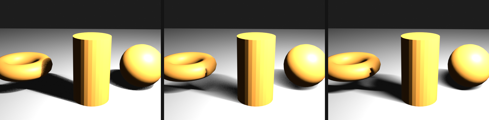
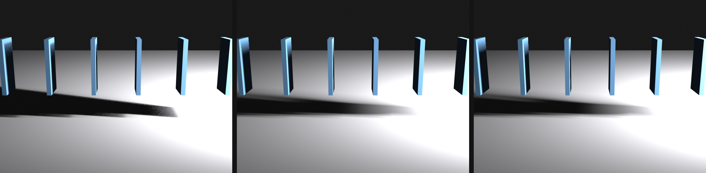
Contact Shadows
🔍 Enhanced Detail Shadows
What are contact shadows?
- Additional shadow detail at contact points
- Where objects meet surfaces
- Adds fine detail regular shadow maps miss
- Screen-space effect (like SSR, SSAO)
Enabling contact shadows:
- Select light → Light Properties
- Shadow section → Contact Shadows
- Check "Contact Shadows" box
Contact shadow settings:
- Distance:
- How far from contact point shadow extends
- Smaller = tight detail
- Larger = wider shadow reach
- Bias:
- Prevents self-shadowing artifacts
- Usually leave at default
- Thickness:
- How thick surfaces are assumed to be
- Affects shadow accuracy
When to use contact shadows:
- Close-up shots needing fine detail
- Objects on tables/floors (contact points visible)
- Enhancing realism of shadow edges
- Performance allows (has cost)
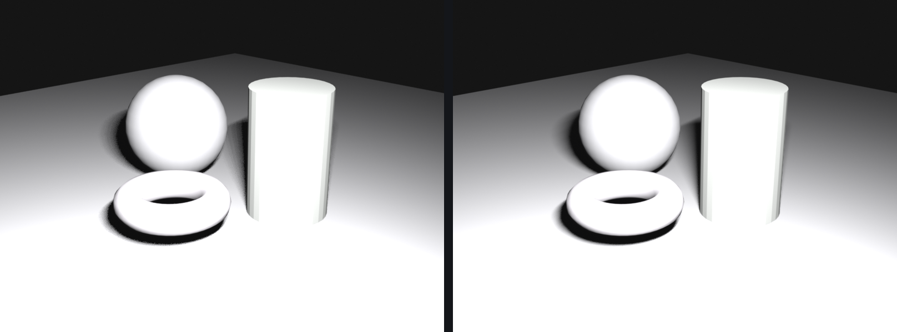
🌈 Indirect Lighting Setup
Indirect lighting is light that bounces off surfaces. Cycles does this automatically, but EEVEE Next needs help through light probes that you bake.
Understanding Indirect Lighting
💡 What is Indirect Light?
Direct vs Indirect lighting:
- Direct light: Light from source directly to surface
- Indirect light: Light bounces off surfaces before reaching object
- Example: Red wall near white object → object tinted red (color bleed)
- Indirect light adds realism and depth
Why Eevee needs help:
- Real-time engines can't calculate bounces on-the-fly
- Would be too slow
- Solution: Pre-calculate and store bounce light
- This is what light probes do
Volume Light Probes
📦 Global Indirect Lighting
What a Volume probe does:
- Captures indirect lighting throughout a volume of space
- Objects inside the volume receive ambient bounce light
- Essential for realistic EEVEE Next lighting
Adding a Volume probe:
Shift+A→ Light Probe → Volume- Scale the probe to encompass your scene
Skey to scale- Should cover all objects needing indirect light
- Adjust resolution in properties:
- Select the Volume probe
- Object Data Properties (probe icon)
- Resolution X, Y, Z voxel grid
Resolution guidelines:
- Low (4x4x4): Very fast, rough approximation
- Medium (8x8x8): Balanced (good starting point)
- High (16x16x16): Detailed but slower
- Higher resolution = more accurate but more memory
- Match resolution to scene size and detail needs
Baking the Volume probe:
- After placing and sizing the probe
- Object → Light Probe → Bake Light Probe Volume
- Or: Object Data Properties → Bake Light Cache button
- EEVEE Next calculates and stores indirect light
- Objects now receive bounce light!
When to re-bake:
- After moving lights
- After changing light colors/strength
- After adding/removing objects
- After changing materials (especially emissive)
- Basically: Any lighting change
Sphere Light Probes
🪞 Enhanced Reflections
What a Sphere probe does:
- Captures the environment for local reflections
- Supplements raytraced Screen Tracing
- Shows reflections of off-screen objects
- Especially useful for reflective materials
Adding a Sphere probe:
Shift+A→ Light Probe → Sphere- Position at center of reflective area
- Middle of room for interior
- Center of object for product shot
- Adjust the probe radius
- Radius sets the probe's reach
- Scale with
Skey - Should cover reflective objects
Sphere probe settings:
- Radius: How far the probe reaches
- Falloff: How gradually influence fades
- Clipping Start/End: What distance range to capture
- Resolution: Reflection capture quality
Using multiple probes:
- Place a probe in each major area
- Overlapping influence is fine
- EEVEE Next blends between nearby probes
- Example: One per room in interior scene
Baking Sphere probes:
- Same as the Volume probe
- Object → Light Probe → Bake Light Probe Volume
- Re-bake when the scene changes
Plane Light Probes
🪞 Planar Reflections
What a Plane probe does:
- High-quality reflections for flat surfaces
- Mirrors, floors, water surfaces
- More accurate than screen tracing for flat reflectors
- Performance cost higher than Sphere probes
Adding a Plane probe:
Shift+A→ Light Probe → Plane- Position on reflective surface
- Align with floor, mirror, water
- Probe should match surface orientation
- Scale to cover reflective area
When to use Plane probes:
- Perfect mirrors or very reflective floors
- Water surfaces
- Any flat highly-reflective surface
- When screen tracing artifacts are visible
Performance note:
- Plane probes render the scene again for each plane
- Use sparingly (1-3 max in scene)
- For most reflections, Screen Tracing plus Sphere probes suffice
✅ Light Probe Workflow
Standard setup for EEVEE Next scenes:
- Add a Volume probe: Covers entire scene
- Add Sphere probe(s): One per major area
- Position and scale the probes
- Enable Raytracing, then Bake Light Probe Volume
- Check result in Rendered view
- Adjust and re-bake as needed
This gives you realistic bounce light and good reflections!
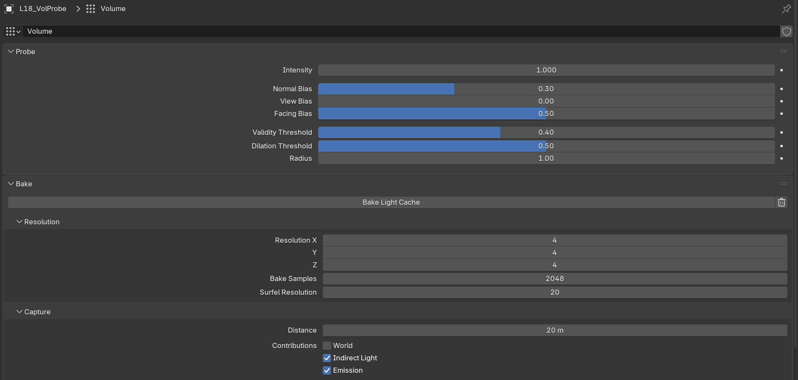
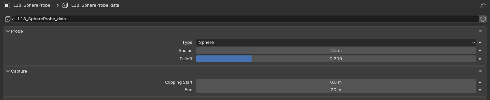
💡 The Pre-baking Trade-off: Having to bake light probes is both Eevee's limitation and its strength. Yes, it's an extra step compared to Cycles' automatic global illumination. But this pre-baking is exactly what allows Eevee to be so fast—the complex lighting calculations are done once, then reused. It's like meal prep: spend time preparing once, then enjoy quick results all week. Professional Eevee users build probe baking into their workflow and barely think about it.
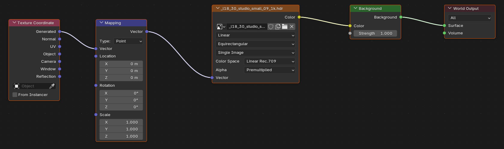
🎨 Materials for Eevee
Most materials work in both Eevee and Cycles, but there are some important differences and optimizations to know.
Material Compatibility
✅ What Works in Eevee
Fully supported:
- Principled BSDF (main shader)
- Image textures
- Procedural textures (Noise, Voronoi, etc.)
- Normal maps and bump maps
- Emission (glowing materials)
- Transparency and alpha
- Subsurface scattering (approximated)
- Most shader nodes
Limited support:
- Volume shaders (smoke, fog) - slower, lower quality
- Complex node setups - some nodes may not work
- Raytracing-specific features
Not supported:
- Caustics (light through glass patterns)
- True ray-traced reflections/refractions
- Some advanced shader nodes
EEVEE Next Material Settings
⚙️ Material-Specific EEVEE Next Options
Location: Material Properties → Settings (bottom section)
Key EEVEE Next material settings:
- Render Method:
- Dithered: Fast stochastic transparency (grass, hair, foliage)
- Blended: Smooth true transparency (glass, water)
- This single enum replaces the legacy Opaque / Alpha Clip / Alpha Hashed / Alpha Blend modes
- Stored as
surface_render_method
- Alpha Clipping:
- A hard cutout is driven by the Alpha Threshold value, not a separate Blend Mode
- Alpha below the threshold = fully transparent
- Alpha above = fully opaque
- Transparent Shadows:
- How the material casts shadows through transparent areas
- On: shadow respects the alpha cutout or transmission
- Off: the material casts a full solid shadow
- Replaces the legacy Shadow Mode menu
- Backface Culling:
- Don't render back faces of geometry
- Performance optimization
- Enable for single-sided objects
- Raytrace Transmission:
- Enable for glass/transparent materials (
use_raytrace_refraction) - Lets refracted light trace through the surface in EEVEE Next
- Pair with a Thickness of Sphere or Slab for solid glass
- Enable for glass/transparent materials (
- Subsurface Translucency:
- For thin materials (leaves, paper)
- Light passes through
- Adds realism to thin objects
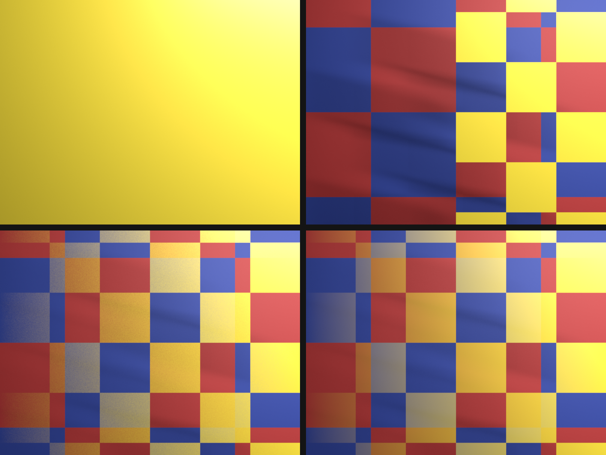
surface_render_method) options: dithered trades grain for speed, blended gives smooth transparency.Transparency Setup
💎 Glass and Transparent Materials
For realistic glass in EEVEE Next:
- Principled BSDF settings:
- Transmission: 1.0
- Roughness: 0.0-0.1 (clear glass)
- IOR: 1.45 (glass)
- Material Settings (bottom):
- Render Method: Blended
- Enable: Raytrace Transmission
- Thickness: Sphere (solid glass) or Slab (panes)
- Transparent Shadows: on
- Render Settings:
- Enable Raytracing
- Raytracing drives both reflection and transmission
For semi-transparent materials (frosted glass, plastic):
- Transmission: 0.5-0.95 (partial)
- Roughness: 0.2-0.5 (frosted)
- Same Render Method and Raytracing setup
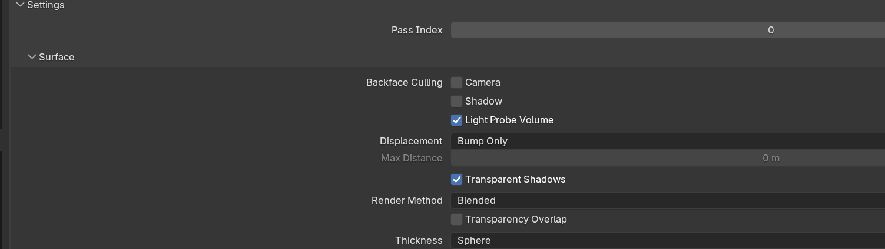
Emission and Glowing Materials
💡 Making Objects Emit Light
Emission setup:
- Principled BSDF → Emission
- Emission Color: Glow color
- Emission Strength: Brightness
- No special Eevee settings needed
- Works automatically
Emission + Bloom:
- Add a Glare node (Type: Bloom) in the Compositor
- Emission Strength above the Glare Threshold = glow effect
- Perfect for:
- Neon signs
- Sci-fi tech panels
- Magic effects
- Light bulbs
Optimization Tips
⚡ Material Performance
Faster material practices:
- Texture resolution:
- Don't use 4K textures if 2K sufficient
- Large textures = more GPU memory
- Optimize texture sizes for viewport performance
- Node complexity:
- Simpler node trees render faster
- Principled BSDF is already optimized
- Avoid excessive layering/mixing
- Transparency:
- Use the Dithered render method instead of Blended when possible
- Dithered is faster than Blended
- Reserve Blended for smooth gradients and clear glass only
- Backface culling:
- Enable for single-sided objects
- Reduces polygons rendered
- Free performance boost
⚡ Performance Optimization
Eevee is fast by default, but you can make it even faster with smart optimization. Let's learn how to maximize viewport and render performance.
Understanding Performance Factors
🎯 What Affects Eevee Speed
Main performance factors:
- GPU power: Faster GPU = faster Eevee (most important)
- VRAM (GPU memory): More VRAM = can handle larger scenes
- Polygon count: More geometry = slower
- Texture sizes: Large textures use more VRAM
- Effect complexity: More effects = slower
- Number of lights: Each light has cost (especially shadows)
- Samples: Higher samples = slower but cleaner
Bottleneck identification:
- If viewport sluggish: Likely geometry or texture heavy
- If render slow: Check samples, effects, shadow settings
- If hitting VRAM limit: Reduce texture resolution
Viewport Performance
🖥️ Faster Viewport Interaction
Viewport-specific optimizations:
- Lower viewport samples:
- Render Properties → Sampling → Viewport Samples
- Set to 8-16 for smooth interaction
- Use 32-64 when need better preview
- Doesn't affect final render
- Simplify settings:
- Render Properties → Simplify
- Enable "Simplify"
- Max Subdivision: Lower for viewport
- Viewport samples can be reduced here too
- Disable expensive effects temporarily:
- Turn off Bloom when modeling/positioning
- Disable Motion Blur in viewport
- Turn off volumetrics while working
- Re-enable for final preview/render
- Use Material Preview mode:
- Faster than full Rendered mode
- Good enough for modeling/layout
- Switch to Rendered for lighting work
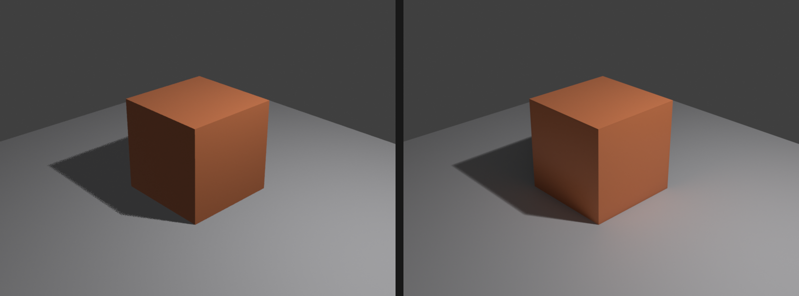
Geometry Optimization
📐 Managing Polygon Count
Reducing geometry load:
- Use appropriate subdivision:
- Don't over-subdivide models
- Distant objects: Lower subdivision
- Only subdivide what camera sees
- Decimate modifier:
- Reduce polygon count on background objects
- Won't notice reduction at distance
- Significant performance gain
- Instancing:
- Use instances instead of duplicates
Alt+Dfor linked duplicate- Multiple instances = only one geometry in memory
- Great for trees, crowds, repeated elements
- Hide what's not needed:
Hto hide objects not in shot- Collections: Use eye icon to disable
- Reduce viewport/render load
Texture Optimization
🖼️ Managing Texture Memory
Texture resolution strategy:
- Match resolution to usage:
- Close-up objects: 2K-4K textures
- Mid-distance: 1K-2K textures
- Background/far objects: 512-1K textures
- Don't use 4K everywhere by default
- Texture compression:
- Use compressed formats (JPG instead of PNG when possible)
- Exception: Normal maps and data textures (keep PNG)
- Balances quality and file size
- Texture atlases:
- Combine multiple textures into one
- Reduces texture switching (faster)
- Advanced technique but very effective
- Procedural textures:
- Consider procedural instead of image textures
- No VRAM usage (calculated on-the-fly)
- Good for noise, patterns, simple textures
Lighting Optimization
💡 Efficient Light Setup
Light count management:
- Limit shadow-casting lights:
- Each shadow = performance cost
- Disable shadows on fill/accent lights
- Only key lights need shadows usually
- Use appropriate light types:
- Sun light: Very efficient (one direction)
- Point/Spot: Moderate cost
- Area: Higher cost (especially large)
- Choose based on need, not just aesthetics
- Light radius/distance:
- Smaller influence = faster
- Don't let lights affect entire scene unnecessarily
- Set appropriate falloff distance
- Light threshold:
- Render Properties → Shadows → Light Threshold
- Dim lights below threshold don't cast shadows
- Automatic optimization
Render Settings Balance
⚖️ Quality vs Speed Trade-offs
Draft quality (fast preview):
- Render Samples: 32
- Shadow Rays: 1, Shadow Steps: 2 (Sampling · Shadows)
- Raytracing off, no Screen Tracing reflections
- Fast GI off, Compositor Glare (Bloom) off
- Use: Quick tests, iteration
Production quality (balanced):
- Render Samples: 64-128
- Shadow Rays: 2, Shadow Steps: 6 (Sampling · Shadows)
- Raytracing on, Fast GI on, Compositor Glare (Bloom) as needed
- Softer shadows via higher Shadow Rays
- Use: Most final renders
High quality (slow but beautiful):
- Render Samples: 256-512
- Shadow Rays: 4, Shadow Steps: 12 (Sampling · Shadows)
- All effects enabled
- Raytracing at full resolution (1:1)
- Ray-traced soft and contact shadows on key lights
- Use: Hero shots, stills, portfolio pieces
Animation-Specific Optimization
🎬 Rendering Multiple Frames
Animation render tips:
- Lower samples than stills:
- Motion hides noise
- 64 samples often sufficient
- Test one frame, adjust as needed
- Persistent data:
- Render Properties → Performance → Persistent Data
- Keeps data in memory between frames
- Much faster for animation
- Enable for animation renders
- Simplify for distant frames:
- Objects far from camera: Lower quality
- Keyframe simplify settings if needed
- Reduce shadow resolution when camera far away
- Render in chunks:
- Render 50-100 frames at a time
- Check quality before rendering all frames
- Prevents wasted time if issues found
✅ Quick Performance Checklist
If Eevee is running slow, check these in order:
- Lower viewport samples (16 or less)
- Reduce shadow map sizes
- Disable expensive effects temporarily (Bloom, Volumetrics)
- Check polygon count (aim for <1M visible polys)
- Reduce texture resolutions
- Limit shadow-casting lights
- Hide objects not in shot
- Use instances instead of duplicates
Usually just the first 3 solve most issues!
🔧 Troubleshooting Eevee
Even experienced artists run into Eevee quirks. Here are solutions to the most common problems you'll encounter.
Render vs Viewport Differences
⚠️ Problem: Render looks different from viewport
Common causes and fixes:
- Different sample counts:
- Viewport uses lower samples (16 default)
- Render uses higher samples (64 default)
- This is normal and expected
- Increase viewport samples to match if needed
- Simplify enabled:
- Check Render Properties → Simplify
- May reduce viewport quality
- Doesn't affect final render
- Camera clipping:
- Objects outside camera view behave differently
- Use camera view (
Numpad 0) to check - Adjust camera clip start/end if needed
Black/Dark Renders
⚠️ Problem: Scene is completely black or too dark
Troubleshooting steps:
- No lights in scene:
- Eevee requires lights (unlike Cycles)
- Add at least one light source
- Or use HDRI with sufficient strength
- World lighting not baked:
- If using HDRI without direct lights
- Add a Volume Light Probe
- Enable Raytracing, then Bake Light Probe Volume
- Objects on wrong layer/collection:
- Check View Layer settings
- Ensure objects visible in render
- Check camera icon in Outliner
- Render region enabled:
Ctrl+Bin camera view- May be rendering only small region
Ctrl+Alt+Bto clear
Transparency Issues
⚠️ Problem: Glass/transparent objects look wrong
Glass appears black/opaque:
- Enable Raytracing in Render Properties
- Material Settings · Raytraced Transmission: on
- Material Settings · Render Method: Blended
- Principled BSDF Transmission near 1.0
- Check all requirements!
Transparent objects have dark edges:
- Render Method likely set to Dithered instead of Blended
- Switch to Blended for smooth transparency
- Or keep Dithered for cheaper, noisier transparency
Transparency sorting issues:
- Multiple transparent objects may render incorrectly
- This is limitation of real-time rendering
- Try the Dithered render method
- Or reorder objects in hierarchy
Reflection Problems
⚠️ Problem: Reflections missing or incorrect
No reflections at all:
- Enable Raytracing in Render Properties
- Check material Roughness (lower = more reflective)
- Confirm the Screen Tracing subpanel is on
Reflections cut off at screen edges:
- This is normal screen-tracing limitation
- Add a Sphere light probe
- Bake the Light Probe Volume
- Probe fills in off-screen reflections
Reflections don't match environment:
- Need to bake light probes
- Add a Sphere light probe
- Object · Bake Light Probe Volume
- Re-bake when scene changes
Shadow Artifacts
⚠️ Problem: Shadow quality issues
Pixelated/blocky shadows:
- Raise Shadow Rays and Shadow Steps (Sampling · Shadows)
- Keep Resolution scale at 1.0
- Move the light closer to the subject
Shadow acne (speckles):
- Raise Shadow Rays and Shadow Steps
- Increase render samples
- Adjust per-light Clip Start
Peter panning (floating shadows):
- Raise Shadow Steps
- Object appears to float above shadow
- Find the balance between noise and panning
Shadows disappear at distance:
- Sun light: covers the full view by default in EEVEE Next
- Other lights: enable Custom Distance and raise it
- Increase to cover full scene
Performance Issues
⚠️ Problem: Eevee running slow or crashing
Viewport extremely slow:
- Lower viewport samples (8-16)
- Switch to Material Preview mode
- Disable Raytracing and Motion Blur temporarily
- Hide objects not needed
Out of memory errors:
- GPU VRAM full
- Reduce texture resolutions
- Lower shadow map sizes
- Reduce polygon count
- Close other GPU-heavy applications
Render crashes:
- Update graphics drivers
- Reduce render resolution temporarily
- Lower samples
- Disable effects one by one to find culprit
Noise and Artifacts
⚠️ Problem: Grainy or noisy renders
General noise:
- Increase render samples (128-256)
- Enable High Quality Normals
- Check if specific effect causing noise
Ambient occlusion noise:
- Increase render samples
- Raise Fast GI Rays and Steps (Raytracing · Fast GI)
- Lower Fast GI distance if the darkening is too strong
Screen-space artifacts:
- Raytraced reflections may show artifacts at edges
- Normal for screen-tracing
- Add light probes to minimize
- Or frame shot to avoid showing artifacts
✅ General Troubleshooting Approach
When something's wrong, try this process:
- Check render settings (correct engine, samples reasonable?)
- Verify viewport in Rendered mode (not Solid/Material Preview)
- Test with simple scene (default cube, one light)
- Add complexity back gradually to identify problem
- Check material settings (Render Method, Raytrace Transmission)
- Verify light probes baked if using indirect lighting
- Update GPU drivers if all else fails
Isolating the problem is key to fixing it!
🎨 Project: Eevee Scene Rendering
Time to put your Eevee knowledge into practice! You'll set up a complete scene optimized for Eevee, comparing it to Cycles, and learning the full workflow.
Project Overview
🎯 Project Goals
What you'll create:
- Product showcase scene with professional lighting
- Properly configured Eevee settings
- Screen space effects enabled and tuned
- Indirect lighting with light probes
- Comparison render in both Eevee and Cycles
Learning objectives:
- Complete Eevee setup workflow
- Balancing quality and performance
- Using light probes effectively
- Understanding when to use Eevee vs Cycles
- Optimizing for best results
Time estimate: 45-60 minutes
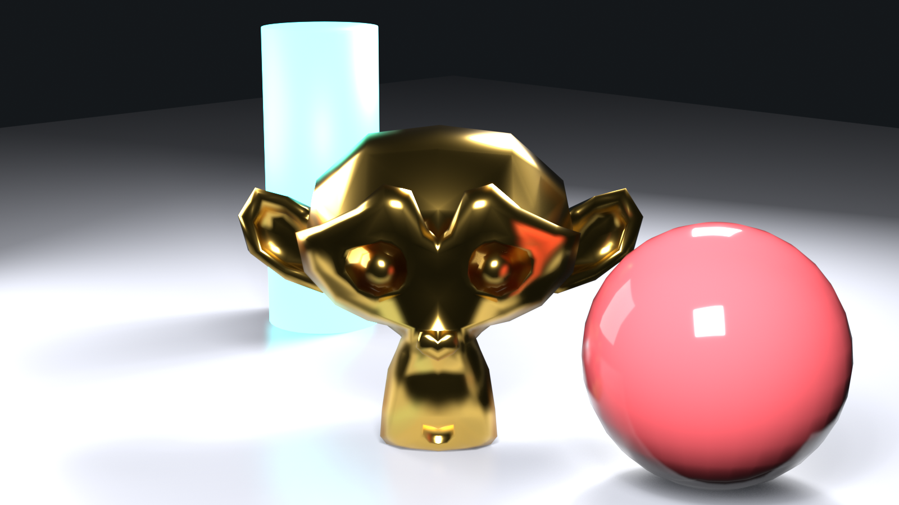
Part 1: Scene Setup
🏗️ Building the Scene
Step 1: Create your subject
- Option A: Model simple product (bottle, phone, vase)
- Option B: Use Suzanne monkey head (
Shift+A→ Mesh → Monkey) - Option C: Import existing model
- Recommendation: Keep it simple for this exercise
Step 2: Add environment
- Ground plane:
Shift+A→ Mesh → Plane- Scale:
S→10
- Background wall (optional):
- Add another plane
- Rotate 90° (
R→X→90) - Position behind object
Step 3: Add materials
- Object material:
- Principled BSDF
- Base Color: Your choice
- Metallic: 0.7 (semi-metallic)
- Roughness: 0.3 (fairly shiny)
- Goal: Show reflections well
- Ground material:
- Base Color: Light gray
- Roughness: 0.7 (mostly matte)
Step 4: Position camera
- Select camera →
Gto move - Angle slightly above and to side
Numpad 0to view through camera- Frame object nicely in view
Part 2: Switch to Eevee and Configure
⚙️ Eevee Setup
Step 1: Switch render engine
- Render Properties → Render Engine dropdown
- Select "Eevee"
- Settings change to Eevee options
Step 2: Configure basic settings
- Sampling:
- Render: 128
- Viewport: 32
- Raytracing:
- Enable checkbox
- Screen Tracing: on
- Fast GI: on (Ambient Occlusion mode)
- Compositor Glare (Bloom):
- Add a Glare node, Type: Bloom
- Threshold: 0.8
- Size to taste
- Reflections:
- Handled by Raytracing above
- Leave Screen Tracing settings default
Step 3: Shadow settings
- Sampling · Shadows:
- Shadow Rays: 4
- Shadow Steps: 12
- Resolution scale: 1.0
Step 4: Switch to rendered view
Zkey → Rendered- See Eevee rendering in real-time
Part 3: Lighting Setup
💡 Add Lights
Step 1: Delete default light
- Select default light →
X→ Delete
Step 2: Add key light
Shift+A→ Light → Area Light- Position above and to side of object
- Settings:
- Power: 50-100W
- Size: 2-3 (both X and Y)
- Color: Slightly warm white
Step 3: Add fill light (optional)
Shift+A→ Light → Area Light- Position opposite side, lower
- Settings:
- Power: 20-30W (weaker than key)
- Size: 3-4 (larger = softer)
- Disable shadows (not needed for fill)
Step 4: Add rim light (optional)
Shift+A→ Light → Point Light- Position behind and above object
- Settings:
- Power: 30-50W
- Color: Slightly cool white
Step 5: Adjust lighting
- Move lights while watching viewport
- Adjust power for good exposure
- Object should be well-lit with form visible
Part 4: Light Probes Setup
🌈 Indirect Lighting
Step 1: Add volume light probe
Shift+A→ Light Probe → Volume- Scale to cover scene:
Sthen drag - Should encompass object and nearby area
- Object Data Properties:
- Resolution X: 8
- Resolution Y: 8
- Resolution Z: 8
Step 2: Add sphere light probe
Shift+A→ Light Probe → Sphere- Position at center of scene
- Scale influence to cover reflective object
Step 3: Bake light probes
- Enable Raytracing, then Object menu: Light Probe → Bake Light Probe Volume
- Wait for baking to complete
- Scene should look more realistic
- Notice improved ambient lighting and reflections
Part 5: Render and Compare
🖼️ Final Renders
Step 1: Render with Eevee
F12to render- Should complete in seconds
- Image → Save As: "eevee_render.png"
- Note render time in info bar
Step 2: Switch to Cycles and render
- Render Properties → Render Engine: Cycles
- Sampling → Render: 128 samples
- Render Properties → Device: GPU Compute (if available)
F12to render- Wait for completion (will be slower)
- Image → Save As: "cycles_render.png"
- Note render time difference
Step 3: Compare results
- Open both images in image viewer
- Place side-by-side
- Compare:
- Overall look and feel
- Shadow quality
- Reflection accuracy
- Lighting softness
- Render time difference
Analysis questions:
- Which render do you prefer aesthetically?
- What differences do you notice?
- Is Eevee speed worth any quality trade-off?
- For this scene, which engine would you choose?
Bonus Challenges
💪 Take It Further
Challenge 1: Glass material
- Add glass object to scene
- Set up proper Eevee transparency
- Enable Raytracing and Raytrace Transmission
- Compare glass in Eevee vs Cycles
Challenge 2: Animation test
- Animate camera rotating around object (120 frames)
- Render animation in Eevee
- Calculate: How long would Cycles take?
- Experience Eevee's animation advantage
Challenge 3: Emissive materials
- Add emission to object or background
- Adjust Bloom to enhance glow
- Create sci-fi or neon look
Challenge 4: Performance optimization
- Copy scene, make "optimized" version
- Lower samples, shadow quality
- Disable expensive effects
- Compare quality vs render time trade-off
Challenge 5: HDRI lighting
- Replace manual lights with HDRI
- Re-bake light probes
- Compare manual vs HDRI lighting in Eevee
Project Success Checklist
✅ Completion Criteria
You've successfully completed this project when you have:
- Created scene with object, environment, and materials
- Configured Eevee settings (sampling, AO, SSR, Bloom, shadows)
- Set up lighting (at least key light)
- Added and baked light probes
- Rendered final image with Eevee
- Rendered comparison image with Cycles
- Analyzed differences and render times
- Understood when to use each engine
📚 Lesson Summary
Congratulations! You've mastered Eevee, Blender's lightning-fast real-time render engine. You now understand how to balance speed and quality for stunning results.
🎯 Key Takeaways
- Eevee fundamentals:
- Real-time rasterization rendering (like games)
- 10-100x faster than Cycles
- Uses screen space techniques for effects
- Perfect for animation and iteration
- Eevee vs Cycles:
- Eevee: Speed, animation, stylized work
- Cycles: Photorealism, accuracy, stills
- Often use both: Eevee for previz, Cycles for finals
- Know strengths and limitations of each
- Essential EEVEE Next settings:
- Samples: 64-128 for render, 16-32 for viewport
- Enable Fast GI for ambient occlusion
- Enable Raytracing (Screen Tracing) for shiny materials
- A Compositor Glare node for glowing effects
- High shadow resolution scale and ray count
- Raytracing and screen tracing:
- Fast, with screen tracing limited to on-screen information
- Raytraced reflections (screen tracing, then light probes)
- Raytrace Transmission for glass
- Fast GI for ambient occlusion and depth
- Light probes are essential:
- Volume probes for indirect lighting
- Sphere probes for off-screen reflections
- Must bake after scene changes
- Critical for realistic EEVEE Next renders
🛠️ Essential Skills You've Developed
- Switching between Eevee and Cycles render engines
- Configuring Eevee settings for quality and performance
- Enabling and tuning screen space effects
- Setting up Bloom for glowing materials
- Configuring shadows for quality
- Adding and baking light probes
- Setting up materials for Eevee (transparency, emission)
- Optimizing scenes for performance
- Troubleshooting common Eevee issues
- Deciding when to use Eevee vs Cycles
💭 Core Concepts to Remember
- Speed is Eevee's superpower: 10-100x faster than Cycles makes animation practical and iteration rapid
- Screen space = limited but fast: Understanding this limitation explains Eevee's behavior
- Light probes are mandatory: Unlike Cycles, Eevee needs baked probes for indirect light and off-screen reflections
- Material settings matter: Render Method and the EEVEE Next material toggles must be configured correctly
- Quality scales with samples: More samples = cleaner result but slower (still way faster than Cycles)
- Not everything needs perfection: Eevee's approximations are good enough for most cases
⚠️ Common Beginner Mistakes to Avoid
- Forgetting to bake light probes: Scene won't have proper indirect lighting or reflections
- Not enabling Raytracing: Reflections and Fast GI won't show up
- Using the wrong Render Method: Transparent materials need Blended, not the default
- Comparing Eevee to Cycles unfairly: They're different tools for different jobs
- Too-low shadow resolution: Blocky shadows ruin otherwise good render
- Not re-baking after changes: Light probes need updating when scene changes
- Expecting ray-traced quality: Eevee is approximation, not perfect simulation
🚀 Next Steps in Your Journey
To continue improving with Eevee:
- Practice the workflow:
- Configure settings → Light scene → Add probes → Bake → Render
- Make this second nature
- Speed comes from repetition
- Test on different projects:
- Try Eevee on various scenes
- Learn where it excels and where it struggles
- Build intuition for engine choice
- Create an animation:
- This is where Eevee truly shines
- Experience rendering 300 frames in minutes
- Understand the power of real-time rendering
- Study game graphics:
- Modern games use similar techniques
- Understand real-time rendering philosophy
- Learn from AAA game art
- Combine Eevee and Cycles:
- Use Eevee for animation
- Cycles for hero frames
- Get best of both worlds
🎬 Real-World Applications
How professionals use Eevee:
- Animation studios: Complete animated shorts in Eevee for streaming platforms
- Motion graphics: Commercial work, explainer videos, branded content
- Previz: Film and TV pre-visualization before expensive shoots
- Real-time art: Interactive installations, VJ loops, live performances
- Game cinematics: In-engine cutscenes and trailers
- Rapid iteration: Client presentations, style tests, director reviews
🌟 The Real-Time Revolution
Eevee represents a fundamental shift in 3D workflows. Before real-time rendering, artists waited hours for results. This created a barrier between idea and execution—by the time you saw results, your creative momentum was lost. Eevee demolishes this barrier. See changes instantly. Iterate freely. Try ideas without fear of wasted time. This isn't just faster rendering; it's a different way of creating.
You now have the power to render in seconds what once took hours. Use this power wisely, iterate boldly, and create fearlessly.
🎓 What's Next?
Coming Up in Lesson 19: Cycles Path Tracing
Now that you understand Eevee's speed, you'll dive deep into Cycles' photorealistic rendering. You'll learn:
- How path tracing works (ray tracing on steroids)
- Configuring Cycles for quality vs speed
- Understanding samples and denoising
- Light paths and bounces
- Caustics and complex light effects
- GPU vs CPU rendering
- Optimization techniques for faster Cycles renders
Get ready to create photorealistic masterpieces!
✅ Before Moving On
Make sure you can:
- Switch between Eevee and Cycles
- Configure basic EEVEE Next settings (samples, Fast GI, Raytracing, Compositor Glare)
- Add and bake light probes
- Set up transparent materials in Eevee
- Understand the difference between screen space and ray tracing
- Decide when to use Eevee vs Cycles
If you can do these things confidently, you're ready for Cycles!